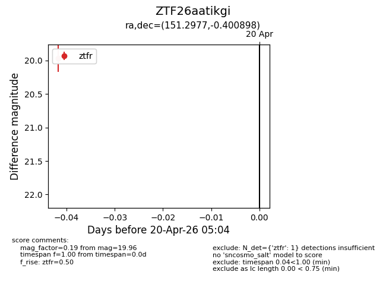
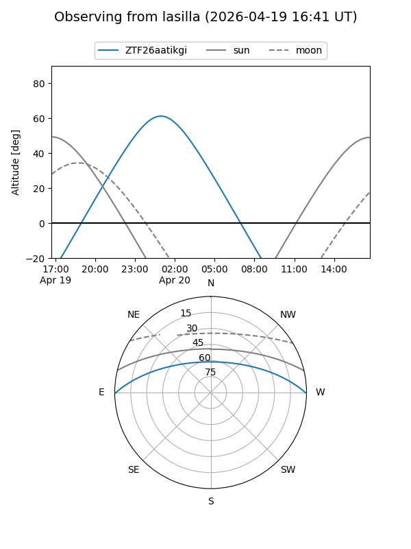
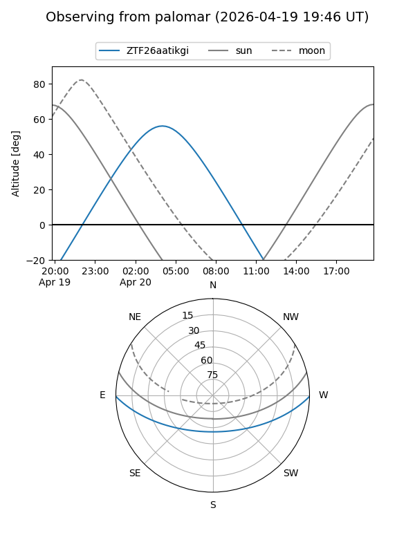
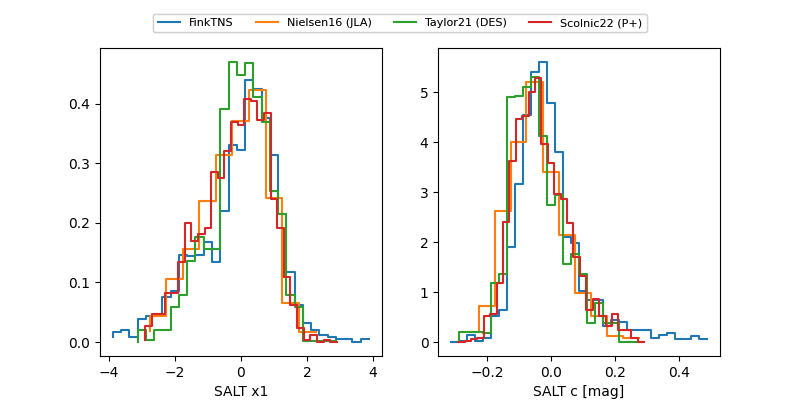

ZTF26aatikgi
Target ZTF26aatikgi at 2026-04-20 05:14
Aliases and brokers:
FINK: link
Lasair: link
ALeRCE: link
alt names
ZTF26aatikgi (ztf,fink_ztf)
Coordinates:
equatorial (ra, dec) = 151.2977,-0.40090
equatorial (HMS+DMS) = 10:05:11.44,-00:24:03.23
galactic (l, b) = (240.5713,+41.50750)
Flags:
Photometry:
last ztfr=19.96
1 ztfr detections
Lightcurve

Visibility


Additional plots
